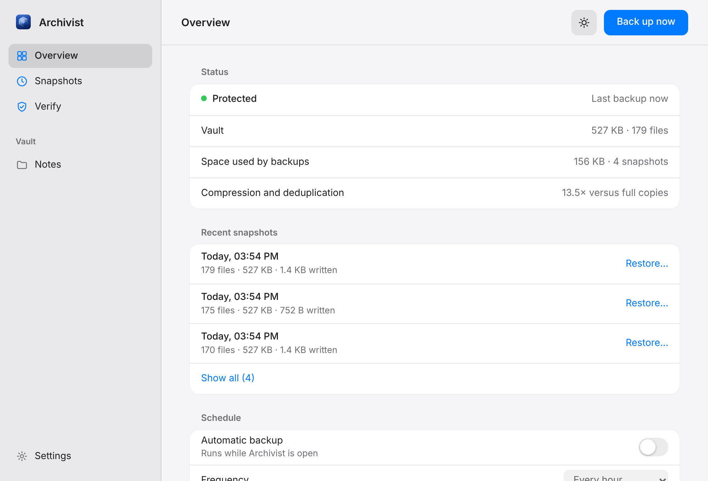

Backups for vaults that keep growing.
Archivist keeps every backup of your Obsidian vault as a full snapshot, writes only what changed, and restores it byte for byte.

Quick start
Build the native app, open it, choose your vault and a backup folder, then press Back up now. Obsidian vaults are detected for you.
cargo build --release --features window
./target/release/archivist./make-dmg.sh
open dist/Archivist.dmg# download the zip for your system from Releases, then
xattr -d com.apple.quarantine ./archivist # macOS, if Gatekeeper blocks itThe window uses the system web view, so there is no bundled browser and the binary is a few MB.
How it works
Files are split into content-defined chunks of about 64 KB. Each chunk is named by its BLAKE3 hash and stored once, compressed with zstd, inside pack files of about 64 MB. A snapshot is a list of files and the chunks they are made of, so an edited note costs a few chunks instead of a whole copy.
| In the vault | What Archivist does | Quality loss |
|---|---|---|
| Notes, text, JSON, CSS | Block deduplication and zstd compression | None |
| PNG, JPEG, WebP, PDF, audio, video | Stored as they are, because they are already compressed | None |
| A note edited by a few lines | Writes only the changed chunks | None |
| A moved or duplicated file | No extra space | None |
archivist backup
archivist list20261117-155423 166 files 526.8 KB (+109.1 KB)
20261117-155425 170 files 526.8 KB (+1.4 KB)
20261117-155426 175 files 526.9 KB (+752.0 B)
20261117-155427 179 files 526.9 KB (+1.4 KB)The first snapshot stores the vault. Each later one adds only what changed, shown after the plus sign. These figures come from a small demo vault of 179 notes.
Archivist in your terminal
Everything the window does is available as a command, so you can script it or run it from a scheduler.
archivist verify --full
archivist stats4 snapshots, 184 blocks checked (full hash)
Archive intact ✓
Snapshots: 4
Latest vault (logical): 526.9 KB
Archive on disk: 155.6 KB
Vault/archive ratio: 3.39x| Command | What it does |
|---|---|
backup | Create a snapshot of the vault |
list, stats | List snapshots, show sizes and ratio |
verify [--full] | Check every block is present, or re-read and re-hash all of them |
restore <id|latest> <dir> | Restore into an empty or new folder |
export <id|latest> <file> | Write one snapshot as a portable .tar.zst |
prune | Apply the retention policy |
ui | Open the interface in a browser instead of the window |
Archivist in your app
The window follows macOS conventions: a sidebar, grouped rows, and settings that apply as you change them. The theme can follow the system or be set to light or dark, and the interface language can be changed in Settings. About and Settings live in the system menu.
Retention
Keep the latest N snapshots plus one per day, week and month for as long as you choose. The newest snapshot is never deleted.
Languages
Every string lives in i18n/<code>.json. English and Italian are included. To add one, copy en.json, translate the values and add a line to CATALOGS in src/i18n.rs.
Explore
Guarantees
- A snapshot appears only after it is completely written. An interrupted backup leaves at most orphaned data, removed by the next
prune. - Earlier backups are never modified.
- The local interface listens on
127.0.0.1only, needs a random token on every call and rejects non-local Host headers. - Restore refuses paths containing
..and destinations that are not empty.
FAQ
Does it replace Time Machine or cloud sync?
No. It protects one thing, an Obsidian vault, with history and integrity checks. Keep your other backups.
Will it shrink my images?
No, on purpose. Photos and PDFs are already compressed, so they are stored unchanged. You save space on text, on repeated content and on history.
Is the archive encrypted?
Not yet. If it holds sensitive data, keep it on an encrypted volume such as FileVault, BitLocker or VeraCrypt. Encryption is the main planned feature.
What is not preserved?
Symlinks are skipped, and Unix permissions and extended attributes are not stored. Modification times are.
Can two computers write to the same archive?
Not at the same time. The lock is local, not network-wide.